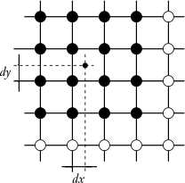
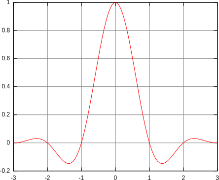
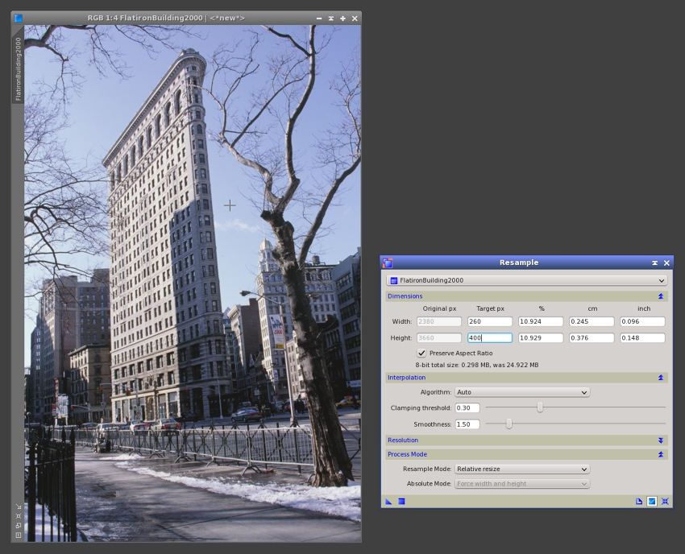

A description of the pixel interpolation algorithms currently implemented on the PixInsight platform. [more]
Keywords: interpolation, pixel interpolation, interpolation algorithms, nearest neighbor interpolation, bilinear interpolation, bicubic spline interpolation, bicubic B-spline interpolation, Lanczos interpolation, Mitchell-Netravali cubic filter interpolation, image rescaling
[hide]
[hide]
Pixel interpolation algorithms are crucial for processes involving geometric transformations, with the exception of non-interpolating procedures such as IntegerResample (pixel binning) and FastRotation (rotate ±90°, 180° and specular transformations). The available pixel interpolation algorithms are directly selectable by the user in standard tools such as Resample, Rotation, DynamicCrop and StarAlignment. They are also used internally by the PixInsight Core application and many tools and processes.
The pixel interpolation problem is quite simple conceptually. A digital image is a discrete representation composed by samples distributed on a uniform, rectangular lattice. Each sample, or vector of samples in multichannel or color images, is what we call a pixel. Pixel interpolation is necessary to obtain new pixel values at arbitrary—not necessarily integer—coordinates from existing data.
Figure 1
In this figure, big circles represent existing image pixels. A new pixel value is desired at the location represented by the small dot, defined by offsets dx and dy measured from the nearest pixel by coordinate truncation. Black big circles are the interpolation boundary in this example, from which a new value will be computed at the specified coordinates. This problem arises in a wide variety of geometric transformations; for example, to resize an image by arbitrary scaling ratios, new pixel values must be obtained from existing image data in this way.
[hide]
The PixInsight/PCL platform provides several pixel interpolation algorithms, ranging from relatively simple procedures (nearest neighbor, bilinear) to more sophisticated algorithms such as Lanczos and bicubic spline, as well as algorithms specifically designed to address the downsampling and smooth interpolation tasks in an efficient and versatile way, such as the Mitchell-Netravali family of cubic filters. We offer now a brief description of these interpolation algorithms.
Nearest Neighbor
This is the simplest possible interpolation algorithm. Nearest neighbor selects the value of the nearest pixel by rounding the coordinates of the desired interpolation point x ≥ 0:
with an obvious extension to the two-dimensional case. In the above equation, ⌊·⌋ is the floor operator: the largest integer less than or equal to the argument. As a result of this simplistic interpolation scheme, nearest neighbor doesn't have subpixel accuracy and generates strong discontinuities, especially when arbitrary rotations and scale changes are involved. The only interesting property of this algorithm is the fact that it preserves the original noise distribution in the transformed image, which can be useful in some image analysis applications.
Bilinear
A slightly more sophisticated interpolation method. The bilinear algorithm interpolates from the nearest four mapped source pixels. It builds and evaluates two linear interpolation functions, one for each plane direction. If f is a two-dimensional image, the bilinear interpolation equations for an arbitrary point (x,y) are the following:
with:
The main drawbacks of bilinear interpolation are poor preservation of image detail and generation of strong aliasing artifacts for rotated images. In practice it is only used as an intermediate transformation in some analysis tasks, mainly due to the fact that it does not generate undershoot (ringing) artifacts.
This is a high-performance implementation of cubic pixel interpolation that usually provides excellent results, both in calculation speed and in the quality of the transformed images. Bicubic spline is usually one of the best choices when not too radical downsampling operations are involved in geometric transformations. The other choice for quality interpolation is the Lanczos algorithm, which we'll describe later.
Bicubic interpolation algorithms interpolate from the nearest sixteen mapped source pixels. Our implementation uses the following cubic spline function as a separable filter to perform a convolution interpolation: [1]
The a constant parameter of the cubic spline controls the depth of the negative lobes of the interpolation function. In our implementation we have set a fixed value a = –1/2. [2] The resulting function profile can be seen on the graph below.
Due to the negative lobes of the bicubic spline interpolation function, this algorithm generates undershoot artifacts (ringing). To fix these problems we have implemented a clamping mechanism, which we describe in a separate section.
Bicubic B-Spline
As bicubic spline interpolation, the bicubic B-spline interpolation algorithm also interpolates from the nearest sixteen source pixels. However, this algorithm uses B-spline interpolating functions instead of cubic splines, which in general yield quite smooth results.
This implementation is based on an algorithm described by Paul Bourke. [3] It performs a convolution with a nonseparable two-dimensional filter, so its complexity is O(N×n2). In contrast, bicubic spline interpolation uses a convolution with a separable filter, and hence its complexity is O(N×n). Despite this performance difference, bicubic B-spline has interesting characteristics of smoothness that make it a good option in some cases.
Lanczos interpolation has the best properties in terms of detail preservation and minimal generation of aliasing artifacts for geometric transformations not involving strong downsampling. The Lanczos interpolation function of order n in one dimension is given by
where the normalized sinc function is:
Interpolation of a two-dimensional image f with a Lanczos filter of order n is performed with the following algorithm:
where (x,y) are the coordinates of the interpolation point and ⌊·⌋ is, as before, the floor operator (the largest integer less than or equal to the argument). The filter weight w is applied by division to preserve flux:
Lanczos interpolation uses a neighborhood of the 2n×2n nearest mapped pixels. A two-dimensional Lanczos filter is nonseparable, so the complexity of Lanczos interpolation is O(N×4n2).
The standard geometry tools in PixInsight provide Lanczos interpolation functions of order 3, 4 and 5, called Lanczos-3, Lanczos-4 and Lanczos-5, respectively. The corresponding function profiles can be seen in the graphs of the figure below.
Figure 3
Lanczos interpolation functions of orders 3, 4 and 5. Contrarily to other interpolation functions, the Lanczos function has infinite support with alternating positive and negative lobes around the origin. The order corresponds to the number of lobes kept in the interpolation function window: Order 3 keeps the first positive lobe around the origin, the second negative lobe, and the third positive lobe; order 4 adds the fourth negative lobe, and so on.
Lanczos-3
Lanczos-4
Lanczos-5
For 32-bit and 64-bit pixel data types, the above algorithm is used by directly evaluating the Lanczos function at each neighborhood point. For 8-bit and 16-bit integer images, special LUT-based Lanczos interpolation algorithms have been implemented, based on precalculated tables of function values. These algorithms provide an accuracy of 1/216 and are about three times faster than their function evaluation counterparts.
As happens with bicubic spline interpolation, the main drawback of Lanczos interpolation is undershoot—see the section on interpolation clamping for a description of this problem and the solution we have implemented.
Interpolation by Mitchell-Netravali parameterized cubic filters
This category comprises different interpolations by convolution with two-parameter, separable cubic filters as described by Mitchell and Netravali: [4]
where three particular combinations of the B and C constants have been used to implement the following interpolation filters:
These interpolations are particularly good to downsample images, as we'll see in an interesting comparison later on this document. The Mitchell-Netravali cubic filter has the parameters recommended by the authors in the original paper (B=C=1/3). This filter has really excellent characteristics in our opinion; when correctly applied, it yields a very good equilibrium between detail preservation (sharpness) and smoothness. Compared to Mitchell-Netravali:
Auto Interpolation Mode
This mode is applicable to processes that can scale or resize images. The Mitchell-Netravali and Lanczos-3 interpolation algorithms are automatically selected as a function of the scaling ratio, independently for each axis:
We think that this automatic selection mode is appropriate for most geometric transformations. However, achieving the best results usually requires some testing work and experimentation to assess the best interpolation algorithm for each particular task.
Undershoot artifacts, more commonly known as ringing, are caused by negative lobes of the interpolation functions falling over bright isolated pixels or high-contrast edges. This is a drawback of the Lanczos and bicubic spline interpolation algorithms.
On linear images, typical undershoot artifacts are composed of one or a few very dark pixels around bright structures such as stars, cosmic rays, and hot pixels. On nonlinear stretched images, including diurnal images, the undershoot and overshoot effects are in general desirable since they increase accutance, or the visual perception of sharpness. In interpolated deep-sky linear images, undershoot can be seen as a price to pay for the superior performance of the Lanczos and bicubic spline algorithms. The counterpart to undershoot is aliasing, especially when geometric transformations involve small rotations, as frequently happens in image registration tasks. Aliasing is problematic in these cases because it acts like a low-pass filter causing a loss of detail on areas distributed regularly over the image.
The PixInsight/PCL implementations of the Lanczos and bicubic spline interpolation algorithms include a special clamping mechanism to prevent generation of visible undershoot artifacts. The clamping feature can be controlled with a clamping threshold parameter that can be varied in the [0,1] range. Lower values cause a more aggressive deringing effect. In the current versions of all geometric and image registration PixInsight tools, the default clamping threshold value is 0.3, which is appropriate to fix undershoot problems in most cases.
Smoothness
This parameter is only available for Mitchell-Netravali cubic filter interpolations, and only applies when images are downsampled (reduced in size). Our implementation of these interpolation algorithms includes a user-adjustable smoothness parameter. This parameter allows you to fine-tune the degree of smoothness in the downsampled result. The default value is 1.5, but you can vary this parameter in the range from 1 to 5.
[hide]
The best way to test the performance and features of different pixel interpolation algorithms is to compare their results for actual image processing tasks. The downsampling and upsampling tasks have specific requirements and pose different challenges for image interpolation. The following examples are based on a difficult target which you can see in the figure below.
The set of examples consist of downsampling the original image to 400 pixels tall, using the different interpolation algorithms available. This is roughly a 1:11 scaling factor. This photograph of the Flatiron Building in New York City is a difficult test case because the image has many high-contrast, small-scale structures, as the tree branches projected over the sky. These structures may easily lead to pixellation due to inappropriate or inappropriately applied pixel interpolation algorithms.
Below you can see the results of this test. The resulting images have been upsampled 2:1 without interpolation with the IntegerResample tool in order to facilitate visual comparisons.
Figure 5
An image downsampling experiment where the whole set of pixel interpolation algorithms has been tested with a difficult target.
From the above results, it is evident that the filter interpolation algorithms (particularly Mitchell-Netravali and Catmull-Rom) can be extremely efficient for downsampling images. Cubic B-spline filter interpolation is probably too smooth.
The bicubic spline, bicubic B-spline and Lanczos algorithms give nearly the same poor results as nearest neighbor and bilinear. This doesn't mean that bicubic spline or Lanczos are bad interpolation algorithms; they are actually high-performance, high-quality interpolations. It is just that bicubic spline and Lanczos are not well suited for so radical downsampling operations (1:11 in this case), as happens with all algorithms that interpolate from a fixed-size pixel boundary. Mitchell-Netravali is in our opinion the best option for this task.
A comparison of results achieved with different values of the smoothness parameter is shown below.
Figure 6
The smoothness parameter allows for adjustable downsampling smoothness with the Mitchell-Netravali family of cubic filter interpolation algorithms. Note the aliasing artifacts generated on the fence near the bottom of the image with smoothness=1. These artifacts get fixed with the default smoothness value of 1.5.
[hide]
As happens with the image downsampling task, image upsampling has some particular requirements that challenge pixel interpolation algorithms. As you'll see, both tasks are complementary: in general, good algorithms for downsampling perform poorly for upsampling, and vice-versa. In this case we have taken a small crop of 100x100 pixels from the original image, which we have upsampled to 630x630 pixels with Resample. Below are the most relevant results.
Figure 7
Image upsampling comparison (1). A small crop of 100×100 pixels has been interpolated to 630×630 pixels with the standard Resample tool using all pixel interpolation algorithms available. The original has been upsampled 6:1 without interpolation with the IntegerResample tool.
Image upsampling comparison (2). A crop of 120×120 pixels has been extracted from the interpolated results above and enlarged 4:1 without interpolation (effective scaling ratio of 25:1). At this scale, the comparison shows the actual differences between these four pixel interpolation algorithms:
This example clearly shows that the Lanczos-3 interpolation algorithm provides the best results for image upsampling, with bicubic spline interpolation an acceptable alternative, especially due to its high computation speed. The results of Lanczos-3 and Lanczos-4 are indistinguisable. The Mitchell-Netravali family of interpolation filters can be used to achieve higher smoothness in the upsampled result, which may be desirable in some applications.
[hide]
The rotation task poses two main problems for pixel interpolation: subpixel accuracy and aliasing. In this test we are interested in comparing the aliasing artifacts generated by the different pixel interpolation algorithms available in PixInsight. To this purpose we have created a 1024×1024 pixels grayscale image, on which we have generated uniformly distributed noise with the standard NoiseGenerator tool. Then we have applied a rotation of 1.5 degrees in the counter-clockwise direction with the Rotation tool. The figure below shows the results for a small crop of about 200×200 pixels near the center of the image.
Figure 8
Image rotation comparison. Small rotations, as those frequently applied in image registration tasks, are particularly sensitive to aliasing. Lanczos-3 interpolation generates less aliasing than the bicubic spline and bilinear algorithms. Nearest neighbor preserves the original noise distribution, but does not provide subpixel accuracy, as becomes evident from the 'circulant blocks' it generates. Other interpolations are too smooth for most practical applications involving rotation without scaling.
[hide]
So far we have carried out qualitative comparisons—that is, comparisons by visual inspection—of the results achieved with different interpolation algorithms for critical geometric transformations. In this final section we are going to complete this document with a quantitative analysis where we'll try to evaluate the performance of each interpolation algorithm in terms of preservation of small-scale structures after small rotations. This criterion is of crucial importance for image registration of deep-sky astronomical images.
The data used in this analysis are similar to the preceding rotation example: a 1024×1024 pixels grayscale image with normally distributed synthetic noise (Gaussian noise) generated with the NoiseGenerator tool, which we have rotated by 1.5 degrees with the Rotation tool using all the interpolation algorithms available. Since the image contains noise exclusively, we can evaluate the noise in the rotated images to assess preservation of small-scale structures after interpolation. The results have been summarized in the following table.
The most reliable item in this table is the percentage of noise pixels. We know that in theory the 100% of pixels should be identified as noise in these images. However, since interpolation for small rotations generates aliasing, the interpolated images contain false structures where the original noise distribution has been smoothed. For this reason we cannot simply evaluate the standard deviation of the rotated images, since doing so would lead to unreliable results. Instead, we have applied a multiscale noise evaluation algorithm that separates noise and signal at small dimensional scales. The algorithm applied [5] has been implemented as the NoiseEvaluation JavaScript script in PixInsight. This algorithm isolates the noise from significant image structures in a number of small-scale wavelet layers (the first four layers in our implementation), assuming a Gaussian noise distribution.
As expected, nearest neighbor preserves the original noise distribution at the cost of no subpixel accuracy. The rest of the values in the table explain why we have selected Lanczos as the default pixel interpolation in the StarAlignment tool: it is the best interpolation by far in terms of detail preservation and minimal aliasing. Bicubic spline is still a rather decent option, but the rest of algorithms are unusable for geometric transformations involving arbitrary rotations without scaling, especially for image registration.
[1] Keys, R. G. (1981), Cubic Convolution Interpolation for Digital Image Processing, IEEE Trans. Acoustics, Speech & Signal Proc., Vol. 29, pp. 1153–1160.
[2] Parker, J. Anthony, et al. (1983), Comparison of Interpolating Methods for Image Resampling, IEEE Trans. Medical Imaging, Vol. 2, No. 1.
[3] Paul Bourke (2001), Bicubic Interpolation for Image Scaling
[4] Don P. Mitchell, Arun N. Netravali (1988), Reconstruction Filters in Computer Graphics, Computer Graphics, Vol. 22, No. 4, pp. 221–228.
[5] Jean-Luc Starck and Fionn Murtagh, Automatic Noise Estimation from the Multiresolution Support, Publications of the Royal Astronomical Society of the Pacific, vol. 110, February 1998, pp. 193-199
Copyright © 2011 Pleiades Astrophoto. All Rights Reserved.